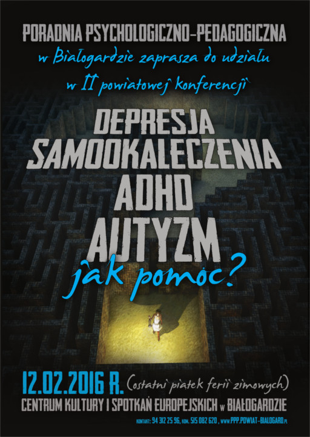

Konferencja "Depresja, samookaleczenia, ADHD, autyzm – jak pomóc?"
II Powiatowa Konferencja nt. "Depresja, samookaleczenia, ADHD, autyzm – jak pomóc?" odbędzie się w dniu 12.02.2016r. (ostatni piątek ferii zimowych) w Centrum Kultury i Spotkań Europejskich w Białogardzie przy ul. 1-go Maja 15.
Wykłady prowadzone będą przez specjalistów- praktyków zajmujących się powyższą problematyką, między innymi wykład dotyczący ADHD wygłosi autorytet w tej dziedzinie – dr n. med.
Artur Kołakowski.
Szczegółowe informacje można uzyskać w sekretariacie poradni lub pod numerem telefonu 94 312 25 96, kom. 515 082-620.
Przewidywany koszt konferencji wynosi 150zł (w tej sumie mieszczą się materiały konferencyjne oraz dwa posiłki). Wpłat można dokonywać od 02.01.2016r. do 05.02.2016r. na konto poradni:
72 1240 3666 1111 0000 4344 7880
Program
Prelegenci
dr n. med. Artur Kołakowski
- Specjalista psychiatra,
- Specjalista psychiatrii dzieci i młodzieży,
- Psychoterapeuta poznawczo – behawioralny,
- Certyfikat Polskiego Towarzystwa Terapii Poznawczej i Behawioralnej (PTTTiB), certyfikat European Association of Cognitive Behavioural Therapy (EACBT),
- Superwizor – dydaktyk PTTPiB.
Pracuje z dziećmi i młodzieżą z problemami rozwojowymi, psychologicznymi i psychoterapeutycznymi, zarówno jako lekarz jak i psychoterapeuta, obecnie w Ośrodku Poza Schematami. Specjalizuje się w
diagnozie i leczeniu zaburzeń rozwojowych u dzieci i młodzieży oraz psychoterapii nastolatków oraz osób dorosłych. Od kilku lat pracuje także w nurcie psychoterapii schematu. Od wielu lat uczy prowadzenia
terapii poznawczo – behawioralnej – obecnie w Centrum Psychoterapii Poznawczo – Behawioralnej oraz w Fundacji Rozwoju Psychiatrii i Psychoterapii. Współautor między innymi następujących pozycji:
- Artur Kołakowski, Tomasz Wolańczyk, Agnieszka Pisula, Magdalena Skotnicka, Anita Bryńska: "ADHD – zespół nadpobudliwości psychoruchowej – Przewodnik dla rodziców i wychowawców", Gdańskie Wydawnictwo Psychologiczne, 2006
- Artur Kołakowski, Agnieszka Pisula – "Sposób na trudne dziecko, przyjazna terapia behawioralna – Niezbędnik dla rodziców, nauczycieli i terapeutów", Gdańskie Wydawnictwo Psychologiczne, Sopot 2011, ISBN 978-83-7489-203-2
- Artur Kołakowski (Redakcja Naukowa): "Zaburzenia zachowania u dzieci. Teoria i praktyka." GWP Sopot 2013
mgr Małgorzata Łuba
- Psycholog (Wydział Psychologii UW), w trakcie szkolenia na psychoterapeutę poznawczo-behawioralnego,
- Trener umiejętności psychologicznych, certyfikowany trener biznesu (House of Skills), trener metody odkrywania potencjału zawodowego "Spadochron" (FISE),
- Członek zarządu Polskiego Towarzystwa Suicydologicznego, współzałożycielka nieformalnego Stowarzyszenia Pomocy Rodzinom i Bliskim Samobójców "Tabu",
- Zajmuje się psychologią praktyczną – prowadzi psychoterapię, rehabilitację neuropsychologiczną, grupy wsparciowe i rozwojowe oraz spotkania psychoedukacyjne,
- Prowadzi zajęcia dydaktyczne na Akademii Pedagogiki Specjalnej, współpracuje m.in. z Centrum CBT-EDU, Instytutem Badań w Oświacie, Wydawnictwem "Fraszka Edukacyjna",
- Publikuje artykuły o terapeutycznej pracy z dziećmi i młodzieżą w "Głosie Pedagogicznym".
mgr Marta Wójcik
- Psycholog, trener,
- Terapeuta w Instytucie Wspierania Rozwoju Dziecka w Gdańsku (IWRD), który wszechstronnie pomaga dzieciom z autyzmem i ich rodzinom. IWRD uzyskał status pierwszej w Polsce i Europie repliki Princeton Child Development Institute w USA (jednej z najlepszych placówek terapeutycznych na świecie),
- Dyrektor IWRD Niepublicznego Ośrodka Doskonalenia Nauczycieli, konsultant w Niepublicznej Poradni Psychologiczno-Pedagogicznej,
- Prowadzi zajęcia na Studium Podyplomowym: "Wczesne wspomaganie, edukacja i terapia dzieci i młodzieży z zaburzeniami rozwoju" oraz wykłady i szkolenia z zakresu terapii behawioralnej dzieci z autyzmem dla nauczycieli i terapeutów na terenie całego kraju,
- Studentka studiów doktoranckich z Analizy Behawioralnej na Oslo and Akershus University College of Applied Sciences (HiOA),
- Współautorka następujących publikacji:
- Budzińska A., Lubomirska A., Wójcik M., Krant, P. J., McClannahan L. (2014). "Use of scripts and scripts-fading procedure and activity schedule to develop spontaneous social interaction in three-year-old girl with autism." Health Psychology Report, vo. 2(1), 2014
- Budzinska A., Wojcik M. (2012). "Promoting the generalization of verbal behavior in autistic child." Acta Neuropsychologica Nr 2 (10)
- Budzińska A., Wójcik M. (2010). "Zespół Aspergera. Księga pytań i odpowiedzi." Wydawnictwo Harmonia.
- Budzińska A., Wójcik M. (2010). "Teaching verbal behaviors to a four-year-old autistic boy using techniques off Applied Behavior Analysis." Acta Neuropsychologica, vol. 8, no. 2.
Media
